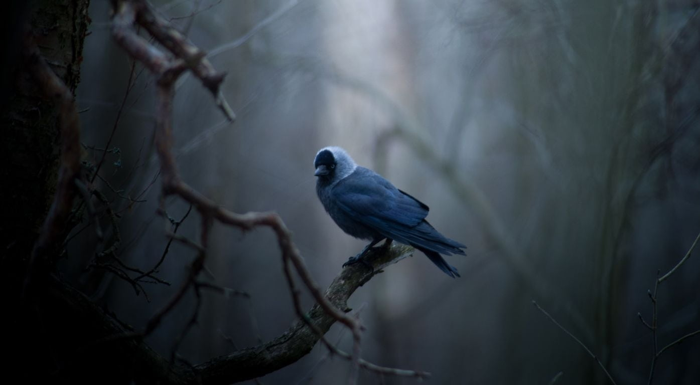
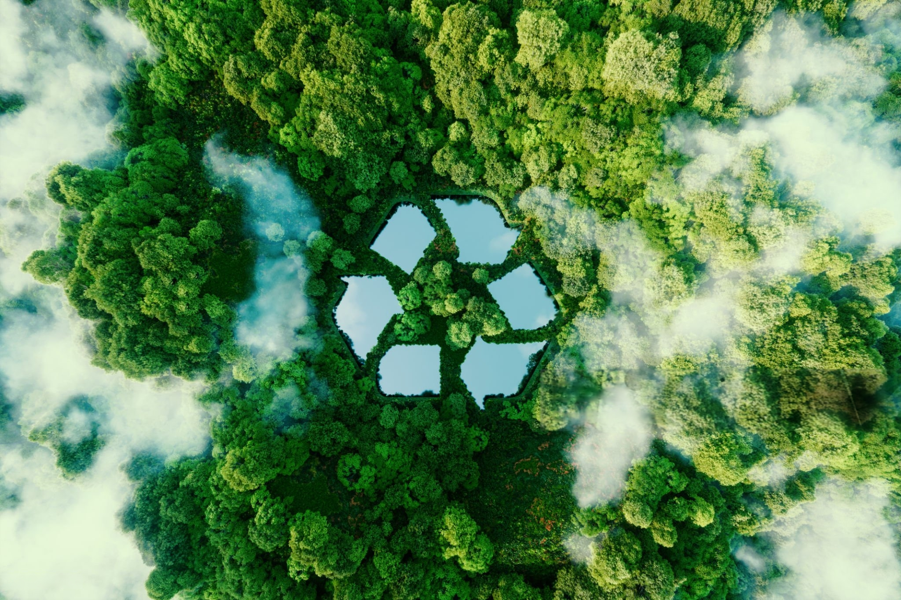

Our Environmental Projects
Forest Restoration
River Cleanup
Urban Garden

Wildlife Protection

Ocean Plastic Reduction

Rewilding Abandoned Lands
Sustainable Farming
Environmental Education
Wetland Conservation

Green Transportation

Zero Waste Initiatives